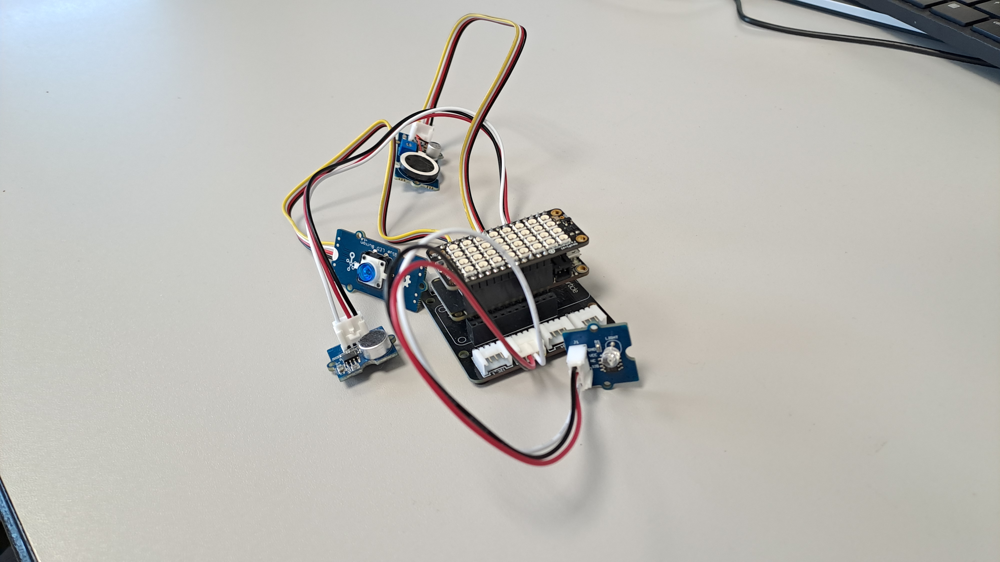

IOT Project
PokeRadar est un projet Symfony effectué en binôme à l'IUT dans le cadre d'un cours pendant 1 mois. Le projet est une carte intéractive basée sur le jeu Pokémon (1ère génération)
qui nous permet de cliquer sur les routes ou bâtiments pour savoir quels Pokémon s'y trouvent. Le menu à gauche change en fonction de l'élément sélectionné.
On peut cliquer sur le nom d'un Pokémon pour pouvoir voir ses caractéristiques. Il y a également un système de recherche plus avancé qui permet d'avoir plus de détails
sur un pokémon comme ses attaques ou encore ses évolutions...
Les données sont récupérées par l'API https://pokeapi.co/.